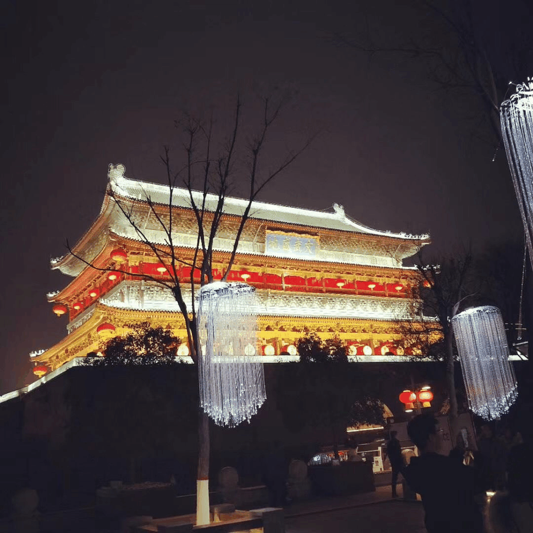
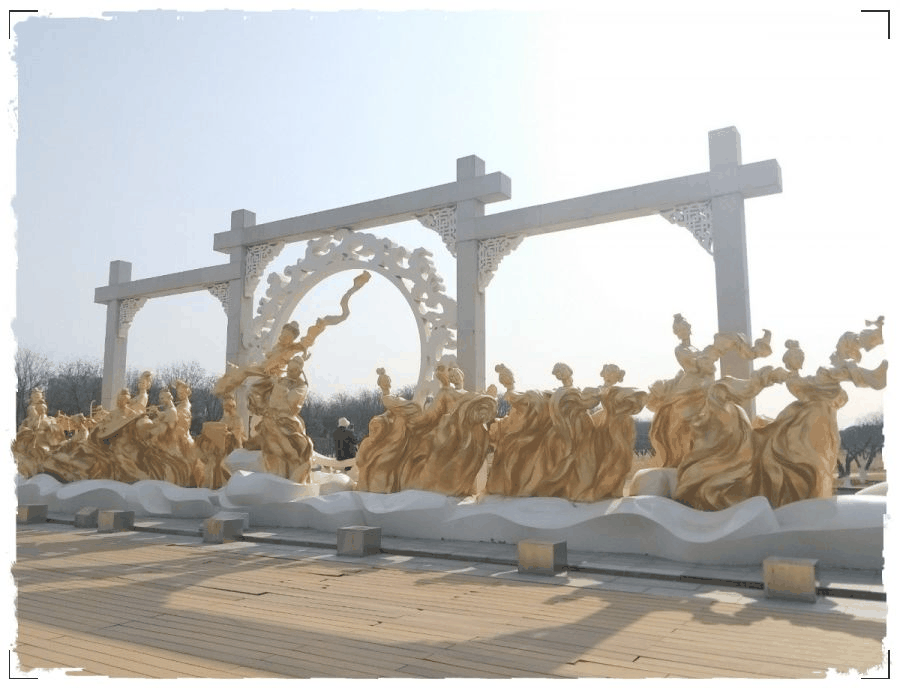
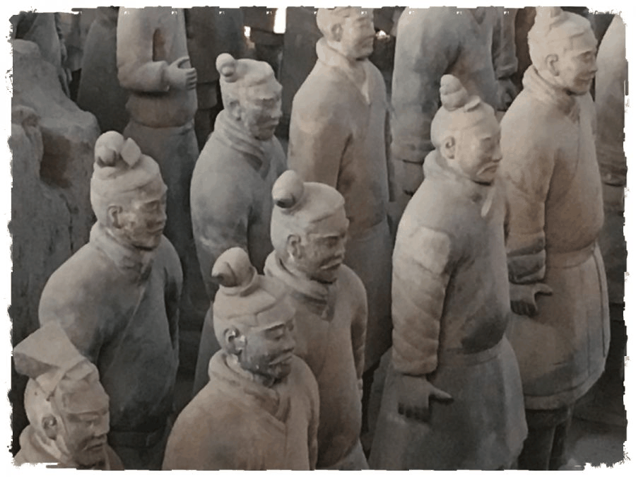

【秦简拓语 · 二】浅谈西安文物古迹保护
浅谈西安文物古迹保护

西安作为有着3100多年的建城史和1100多年的建都史的中国城市，流淌着中华民族的悠久历史和生生不息的奋斗精神。西安是大遗址十分集中的地方，如秦始皇陵兵马俑坑、汉长城未央宫遗址和大明宫遗址都被列入了世界文化遗产名录。随着西安城市的快速发展，如何做好西安大遗址保护与合理利用是一项具有重要意义的使命。
❖



西安大遗址特点
西安见证了周秦汉唐四朝的兴衰更替，其地上、地下的建筑遗址、遗迹和出土的文物均代表了当时科技、文化的鼎盛水平。其具有极高的历史、文化、科学价值，是人类历史文化的宝贵财富。

城市规模的逐渐扩大对西安大遗址保护的压力日渐加剧
西安老城区一直都是西安的政治、经济和文化中心。随着城市化进程的加速，原来处于郊野的阿房宫遗址、汉长安城遗址、大明宫遗址等大遗址已逐步位于城市建设区内。在城市改造及扩建的过程中，城市建设与大遗址保护不可避免的存在着巨大的矛盾。
西安大遗址保护初见成效，但成本投入高昂
由于西安大遗址占地面积较大，在大遗址的保护方面成本投入巨大。以先大明宫考古及遗址公园的建设为例，部分遗址的重要基址被稠密的城市居民区所占，当地的居民的生产生活活动对遗址造成了非常严重的破坏。数十年中经历的两次巨大房屋自改自建，造成了遗址公园遗址区、居民区、工业区、商业区功能混杂，文物保护与经济发展、城市建设、环境改善矛盾日益突出。现如今大明宫国家遗址公园的建立、原住居民区安排妥当、周围基础设施的建设足以体现市政府巨大的人力物力的投入，且后期需要持续不断的维护需要支付大量的维护经费。


如何做好大遗址保护工作
1
注重将遗址保护规划纳入城市总体规划
西安先后对秦始皇陵、大明宫遗址、汉长安城遗址等大型遗址编制入城市规划之列中并且上报国家文物局，进行了良好和妥善的实践，遵循着“保护为主、抢救第一、合理利用、加强管理”的十六字方针制定了切实可行、行之有效的策划与方案。

2
落实保护工作
在统筹规划大遗址保护时，西安的大型基本建设都严格按照大遗址保护规划，对大遗址做出让步，轨道交通的建设都尽量避开文物主体；对大遗址周边的建设项目提出高度、色彩、形式等方面的要求，力求新建筑与文物建筑能够协调统一。
3
设立保护机构
近些年，西安为了更好地保护这些大遗址，成立了文物、规划等多部门联合办公的管理机构，目的是为改善其周边环境、协调管理城市规划与遗址保护工作。在一些大遗址如阿房宫计划建设保护区，旨在加强对古迹的保护。

西安因其独特的历史条件呈现出以大遗址为主，文物以时间线聚落在遗址区内的现象，在保护大遗址的同时也应注意对文物开发保护的工作，我们大学生应当从实际出发具体问题具体对待，在发扬中国优秀传统文化的同时提升自我的文保意识，并将这份热情与决心传递下去。

来源丨行者无疆实践团
文字丨潘晓青
排版丨邓子孚
审核丨潘雯雯 邓子孚
行者无疆实践团
QQ：2758025831

随行者一起认识世界
长按二维码关注